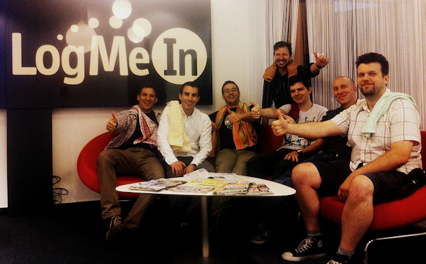
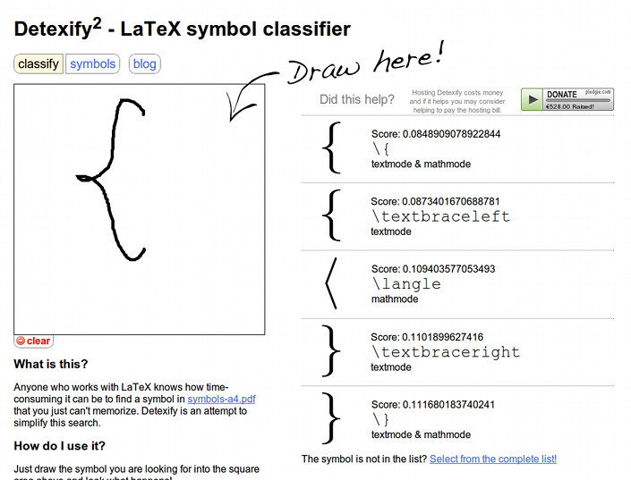

Törölközőnap, tegnap, munkában. Korrekt.

So long Douglas, and thanks for all the fish!
Jelenleg három gépen kell dolgoznom, kettőn Windows 7 csücsül, míg a harmadik egy Mac mini. Elég sokszor kell fájlokat átvinnem egyik gépről a másikra, de a háló gyakran rendetlenkedik. (Szar az infrastruktúra.)
V√©g√ºl is nem olyan nagy gond, ha naponta egyszer-k√©tszer pendrive-ot kell haszn√°lnom, am√≠g meg nem csin√°lj√°k a h√°l√≥t. Viszont… Viszont el≈ë szoktak fordulni 4GB-n√°l nagyobb f√°jlok, ez√©rt a FAT32 nem opci√≥. Az NTFS-t az OS X nem tudja √≠rni. Gondoltam kipr√≥b√°lom az exFAT-ot, hiszen pont flash drive-okra tal√°lt√°k ki. Nade. Itthon nagyr√©szt Linuxot haszn√°lok, Linux t√°mogat√°s meg nincs hozz√°, naponta lementeni meg √°tform√°zni nem akarom a pendrive-ot. Persze erre lehet azt mondani, hogy vegyek m√©g egy pendrive-ot. H√°t, van h√°rom-n√©gy is, de √©n mindig csak felkapok egyet, nemigaz√°n n√©zem, hogy melyiket, bele a g√©pbe, √©s akkor any√°zok, amikor pont olyan g√©pbe dugom, ami nem tudja √≠rni a rajta lev≈ë f√°jlrendszert.
Kitartottam az exFAT mellett, mert mégiscsak jó, és találtam hozzá Linux támogatást is. Igaz, nem out-of-the-box, viszont három perc bizgetés után máris olvashatjuk, és írhatjuk a pendrive-unkat. A legnépszerűbb disztribúciókhoz csomagokat is találunk, de a wiki oldalt megnézve nem nehéz lefordítani sem. Szóval, használjátok, mert jó. Persze mindenki csak saját felelősségére, mert még béta a dolog, de nekem eddig működik.

Flash Tibor immár olvasható és írható!
Egy tipikus eset bemutatása következik.
Megírsz egy viszonylag egyszerű konfigot. Örülsz, hogy meg tudod csinálni. Nem is olyan nehéz, mint amilyennek elsőre látszik. Elindítod a szolgáltatást, nem történik semmi. Persze ilyenkor egyből az az első gondolat, hogy valamit elírtál az egyik conf állományban. Megnézed, az összeset, amit szerkesztettél. Helyből észreveszel három elírást, amit az egyikben bennehagytál. Kijavítod, aztán mentenél, de nincs meg a jogosultságod. No sebaj, copy-paste lesz. Kilépsz, aztán a megfelelő jogokkal megint be. Persze a copy-zni elfelejtetted a változtatást, ezért újra megkeresed az elírásokat. Kijavítod. Szolgáltatást újra elindítod, megint semmi.
Eztán netstatolsz, mint az őrült. Hát persze, hogy nem csücsül a porton a kis aranyos. Nézzünk logot! Na, log az nincs, mert nem állítottál be logolást. Beállítod a logolást, újraindítod a szolgáltatást, reprodukálod a hibát. (Szerencsére most gond nélkül megy a hiba reprodukálása.) Nézzünk logot! Szépen megette a saját konfigomat, viszont van egy error. Oké, végre valami nyom, amin elindulhatsz. Figyelmesen elolvasod, de az üzenetet az égegyadta világon nem tudod megérteni. Google. Semmi. Oké, olvassuk el a logot még ötször. Aztán rájössz, hogy mit rontottál el! (Ez a legjobb rész.) Kihagytad a user mezőt a konfigból.

Erre persze legalább egy órád ráment. Fejedet falba vered.
Megtanultad. Kész.
Using a makefile for large LaTeX projects is a real time saver if you don’t use LaTeX IDEs (e.g. Texmaker, TeXworks). For example some of my friends have to log in to a central server, which provides the same LaTeX setup for everyone in their institution, to compile their documents. In this particular case using make is a must do! thing if you don’t want to fiddle around keeping track of which was the last command you executed or whether your pdf is up to date.
So, what are these makefile and make things?
Make is a tool which controls the generation of executables and other non-source files of a program from the program’s source files.
Make gets its knowledge of how to build your program from a file called the makefile, which lists each of the non-source files and how to compute it from other files. When you write a program, you should write a makefile for it, so that it is possible to use Make to build and install the program.
[…]
Make figures out automatically which files it needs to update, based on which source files have changed. It also automatically determines the proper order for updating files, in case one non-source file depends on another non-source file.
Here is my standard makefile template for projects utilizing pdflatex and bibtex (also downloadable at the end of the post):
1 2 3 4 5 6 7 8 9 10 11 12 13 14 15 16 17 18 19 20 21 22 23 24 25 26 27 28 29 30 31 32 33 34 35 36 37 38 39 40 | # Makefile for my LaTeX project # LaTeX LC=pdflatex # Bibtex BC=bibtex # The main tex file (without extension) MAIN=main # The tex files that are included in the project's main tex file DEPS=./tex/chapter1.tex ./tex/chapter2.tex ./tex/chapter3.tex MIDTARGET=$(MAIN).pdf # The desired filename TARGET=myprojectv01.pdf .PHONY: clean show all all: $(TARGET) $(TARGET): $(MIDTARGET) cp $(MIDTARGET) $(TARGET) $(MIDTARGET): $(MAIN).tex $(MAIN).aux $(BC) $(MAIN).aux $(LC) $(MAIN).tex $(LC) $(MAIN).tex $(MAIN).aux: $(MAIN).tex $(DEPS) $(LC) $(MAIN).tex show: $(TARGET) xdg-open $< & clean: rm $(MAIN).out $(MAIN).aux $(MAIN).toc $(MAIN).lof $(MAIN).lot $(MAIN).log \ $(MAIN).bbl $(MAIN).blg $(MIDTARGET) $(TARGET) |
I won’t go into the details, but if you want to complement this makefile for using latex instead of pdflatex then you’ll have to create another middle target for creating the dvi file. For those who’ll use this makefile in a non-X environment don’t use the show target beacuse xdg-open is meant to be used under X.
I think the GNU Make Manual is detailed enough to understand what I was talking about. But feel free to contact me if you have any questions.
Download: makefile.tar.gz
Ez azoknak szól, akik Рhozzám hasonlóan Рsokat szoptak már a hyperref csomaggal.
Szeptemberben volt egy alkalom, amikor fekvő A4-es méretű lappal kellett dolgoznom. Ez eddig nem ügy, amíg később rá nem jöttem, hogy kell nekem hyperref is. Betöltöttem hát. Ekkor borult fel minden, mert az elkészült oldal valami félig fekete, álló A4-es dokumentum lett. Alászálltam a net legmélyebb bugyraiba, ahol megtaláltam a választ a kérdésemre. Először töltsük be a hyperref csomagot a setpagesize=false opcióval és csak aztán a geometry-t.
1 2 3 | \documentclass{memoir} \usepackage[setpagesize=false, xetex]{hyperref} \usepackage[a4paper, landscape, xetex]{geometry} |
Ma pedig nekiálltam review-olni egy egy évvel korábbi projektemet. Egy darab kommentet nem írtam hozzá, úgyhogy ezzel el is ment a napom nagy része. Aztán ugyanabba a problémába ütköztem, amibe már egy évvel ezelőtt is. Vagyis a kész PDF-ben az összes bookmarkot egyetlen láncba fűzve, nem pedig szép fát találtam. Újfent alászálltam a mélybe, és egy Debian maintenance levlistán találtam meg a megoldást.
“magyar.ldf” redefines most of the essential commands
that also hyperref must change. A patch would have to
include many of hyperref/driver stuff/nameref, adopted
to magyar.ldf.
Alatta pedig ott volt egy gyönyörű makró:
1 2 3 4 5 6 7 8 9 10 11 12 13 14 15 16 17 18 19 20 21 22 23 24 25 26 27 28 29 30 31 32 | \makeatletter \let\Hy@magyar@saved@refstepcounter\refstepcounter \addto\extrasmagyar{% \let\H@refstepcounter\refstepcounter \let\refstepcounter\Hy@magyar@saved@refstepcounter \expandafter\renewcommand\expandafter*\expandafter\@ssect \expandafter[\expandafter 5\expandafter]\expandafter{% \expandafter\def\expandafter\@currentlabelname\expandafter{% \expandafter #\expandafter 5\expandafter }% \@ssect{#1}{#2}{#3}{#4}{#5}% \phantomsection }% \expandafter\Hy@magyar@patch@sect\expandafter{% \@sect{#1}{#2}{#3}{#4}{#5}{#6}[{#7}]{#8}% }{#1#2#3#4#5#6[#7]#8}{#2}{#7}% } \def\Hy@magyar@patch@sect#1#2#3#4{% \def\@sect#2{% \setcounter{section@level}{#3}% \def\@currentlabelname{#4}% \ifnum #3>\c@secnumdepth \Hy@GlobalStepCount\Hy@linkcounter \xdef\@currentHref{section*.\the\Hy@linkcounter}% \fi #1% \ifnum #3>\c@secnumdepth \Hy@raisedlink{\hyper@anchorstart{\@currentHref}\hyper@anchorend}% \fi }% } \makeatother |
Őszintén megmondom, még nem néztem át tüzetesebben, de eddig minden gondomat megoldotta.
Open Design Now: Why Design Cannot Remain Exclusive surveys this emerging field for the first time. Insiders including John Thackara, Droog Design’s Renny Ramakers and Bre Pettis look at what’s driving open design and where it’s going. They examine new business models and issues of copyright, sustainability and social critique. Case studies show how projects ranging from the RepRap self-replicating 3D-printer to $50 prosthetic legs are changing the world.
Open Design Now is essential reading for anyone concerned with the future of design and society
Until 12-12-12, each 25 days one case, one article and one of the visual index pages will be published on this website. After that you’ll have the whole book to read for free here. To keep yourself updated on newly opened content, please like us on Facebook, or follow @waag and @premsela on Twitter.
A szerzők a Creative Commons Attribution-NonCommercial-ShareAlike 3.0 Unported licencet választották, ami azért jó, mert a megjelenő dolgokat, üzleti céllal nem, de amúgy szabadon fel lehet használni és terjeszteni.
Eddig ugyan csak egyetlen cikket olvastam el, de ha az összes ilyen jó, megvannak a hivatkozások stb., akkor nagyon igényes kiadvánnyal van dolgunk. Ajánlott.
Éppen egy jegyzetet írok egy egyetemnek. Emiatt elég sokszor forgatom a Comprehensive LaTeX Symbol Listet, ugyanis nem fogok több száz szimbólumot megjegyezni csak azért, hogy két hét múlva ne emlékezzek rá.
Pár perce viszont rátaláltam a Detexify nevű szolgáltatásra, ahol semmi mást nem kell tenni, mint egy canvasra felrajzolni a keresett jelet, és máris kidobja a LaTeX megfelelőjét. Öcsém, ez mekkora találmány!

A szolgáltatás mögött álló Daniel Kirsch állítása szerint a cucc HTML5-öt használ, Firefox, Opera és Safari böngészőkben működik. Állati jó!
Sikerült egy tök jó nyári munkát találnom az idén. Egy papíripari cég tervezési osztályára kerültem mint sokszorosító. Ez a munkakör valójában nem fedi le azt, ami a tényleges feladatom, ami nem más, mint a cég régi tervrajzainak digitalizálása és ezeknek adatbázisba vétele.
Azalatt míg a cégnél dolgozok esélyem sem lesz befejezni az összes rajz szkennelését, és az adatbázist teljessé tenni. Ez akkor tuadtosult bennem igazán, amikor beléptem a rajztárba, ahol azok a tervek vannak, amelyekkel dolgoznom kell. Hegyekben állnak a rajzok, de nem baj, lesz helyem jövőre is. :)
Egy hatalmas scanner mellett töltöm az időm java részét, viszont még nem néztem meg pontosan milyen gyártmány. Baromi jó minőségű képeket készít villámgyorsan, szinte hihetetlen, hogy régi, szakadt rajzokból milyen tökéletes pdf-eket csinál. Ahhoz képest, hogy ma kezdtem egészen jól ment a dolog. Persze át kellett esni az ilyenkor kötelező formaságokon, munkavédelmi oktatáson stb. Végigvezettek az egész cégen, mindenkinek bemutattak (senkinek sem emlékszem a nevére). A közeli kollégák nagyon kedvesek és rendesek, családias a hangulat, ez sokat segített, hogy leküzdjem a kezdeti idegességet. Összességében nagyon kellemes helyre kerültem, örülök neki. Egyetlen negatívumként csak azt tudom megemlíteni, hogy hátam mögött a multifunkciós szupergéppel, előttem pedig a hiperszkennerrel kicsit melegem van, fűtenek rendesen. Ez persze a legkevesebb, jó a hely és ez a lényeg.